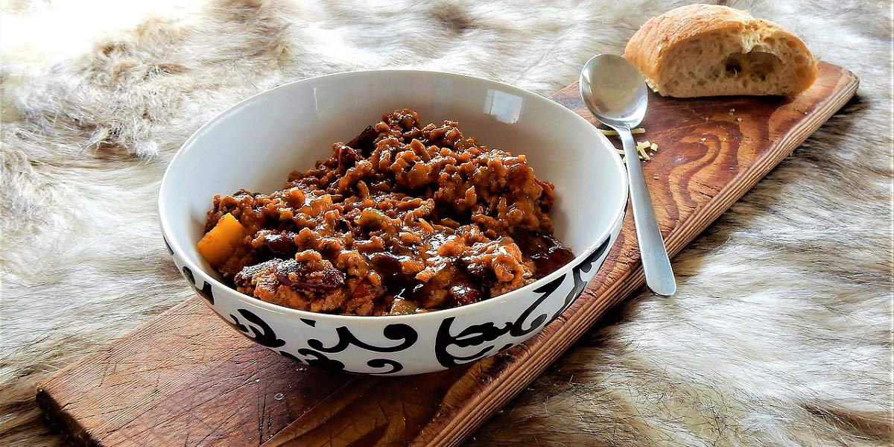

Quorn Con Carne
Recipe Specification
Ingredients List
| Ingredients | Quantity |
|---|---|
| Vegetable Oil | 50ml |
| White Onion | 2x1 |
| Garlic Cloves | 3 Cloves |
| Mince Quorn | 1 kg |
| Red Wine | 250ml |
| Tinned Chopped Tomatoes | 2x400g |
| Tomato Puree | 45g |
| Red Chilli | 2x1 |
| Ground Cumin | 1 tsp |
| Ground Coriander | 1 tsp |
| Ground Cinnamon | ¼; tsp |
| Worcestershire Sauce | 1 tsp |
| Vegetbale Stock | 150ml |
| Kidney Beans | 2x400g |
| Coriander | 60g |
| Lime | 1x1 |
| Salt & Pepper | To Season |
Yield: 6-8 portions
Preparation
- Peel and finely dice white onion.
- Peel and crush garlic cloves.
- Finely slice red chillies.
- Pick and finely chop coriander leaves.
- Zest and juice lime.
- Drain kidney beans.
Cooking Instructions
- Place a large saucepan over a medium/high heat and add half the vegetable oil.
- Add onions, garlic and sliced chillies to pan before cooking for 4-5 minutes until vegetables are soft.
- Add ground cumin, ground coriander and ground cinnamon and cook for 3-4 minutes.
- Add mince quorn, tomato puree, tinned tomato, kidney beans, red wine and vegetable stock before stirring, bringing to the boil and reducing to the simmer for 40-45 minutes.
- Once sauce has thickened, add Worcestershire sauce, lime juice, lime zest, chopped coriander and season to taste.

Serving Suggestions
Serve chilli con carne with rice or potato wedges.
Storing instructions
Allow to cool to room temperature. Consume within 4 days of making. Store in the fridge
Reheating Instructions
Place in the microwave for 2-3 minutes.